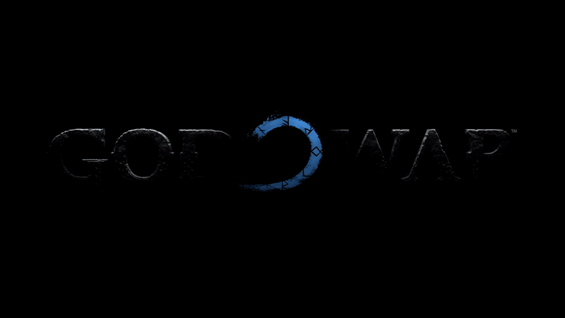
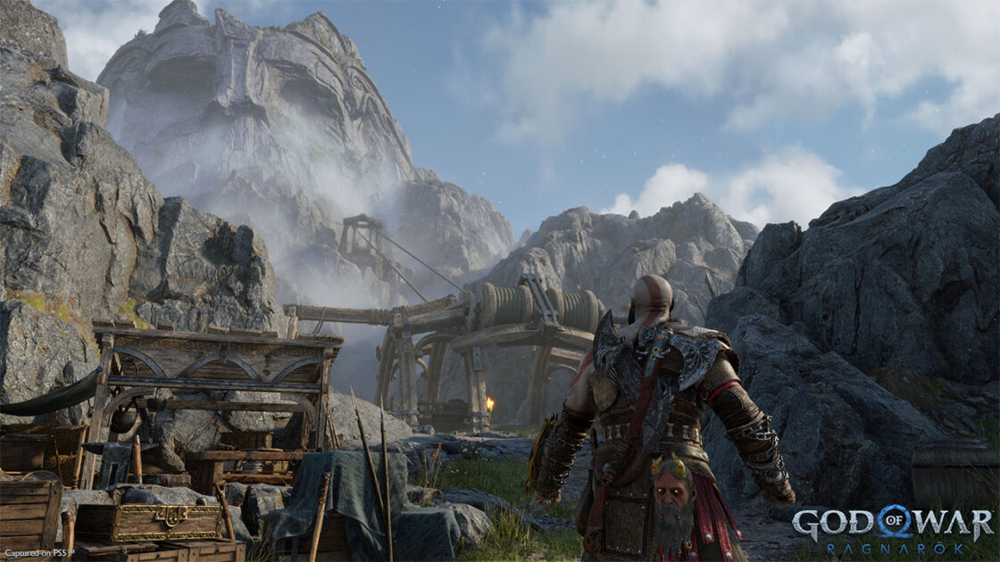
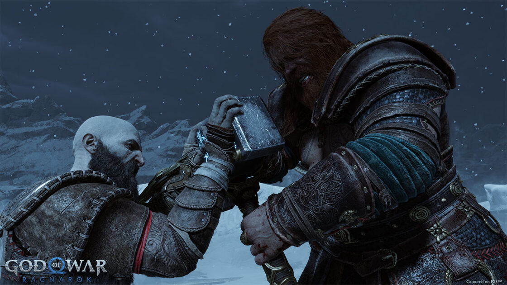
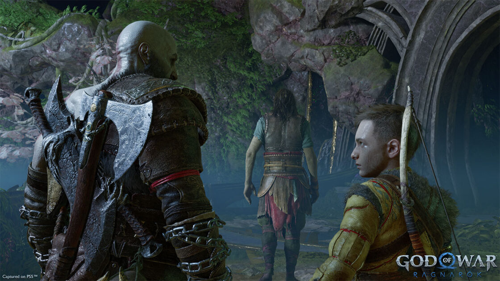
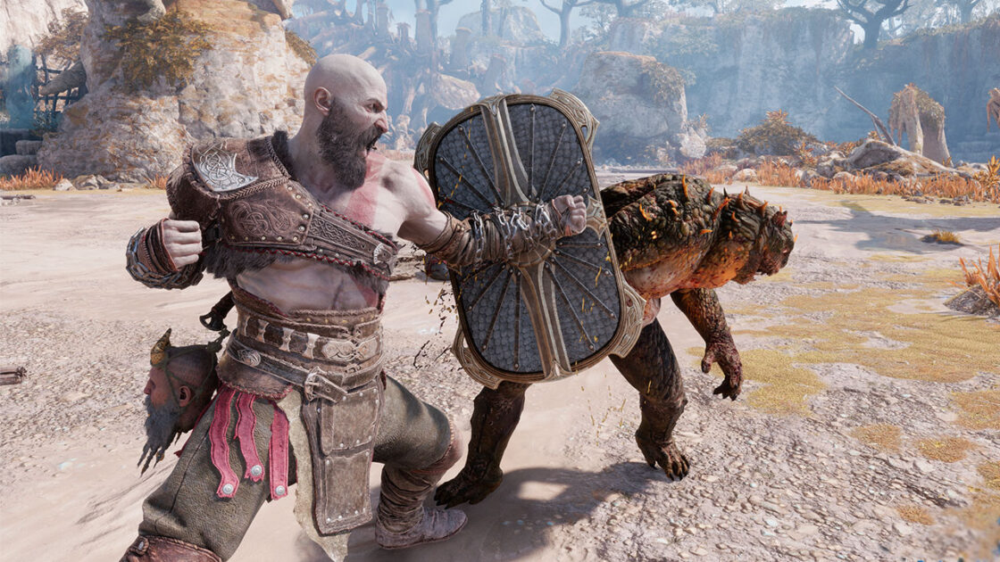
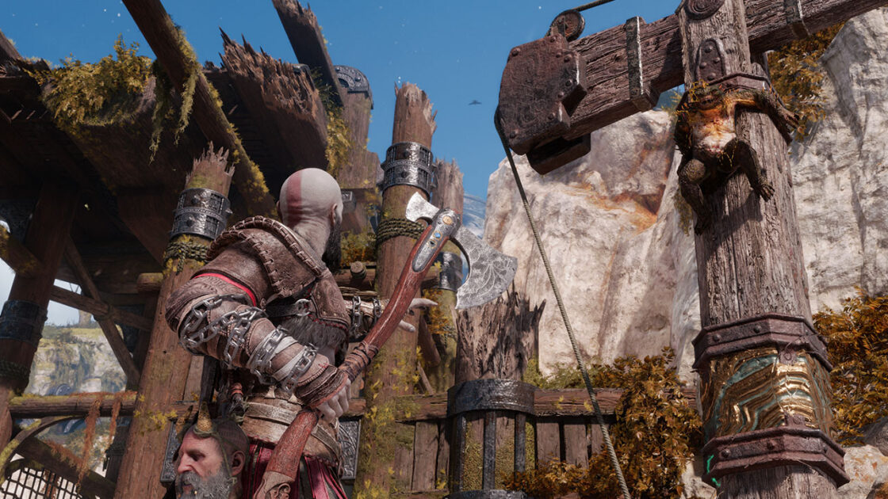
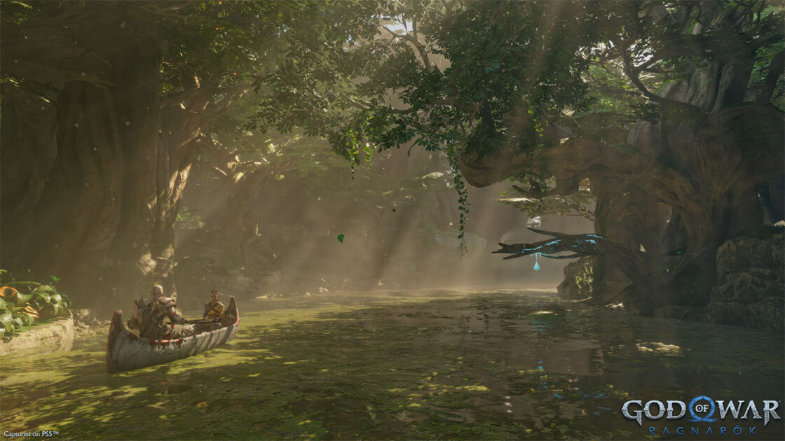
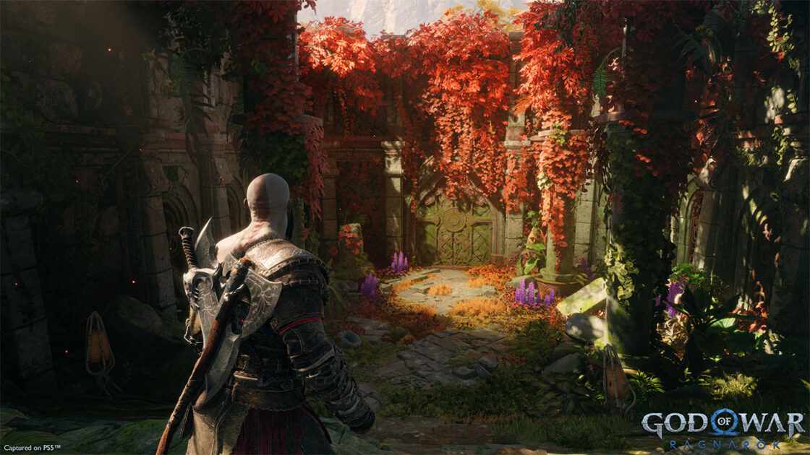
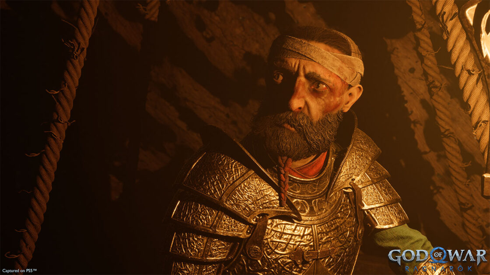
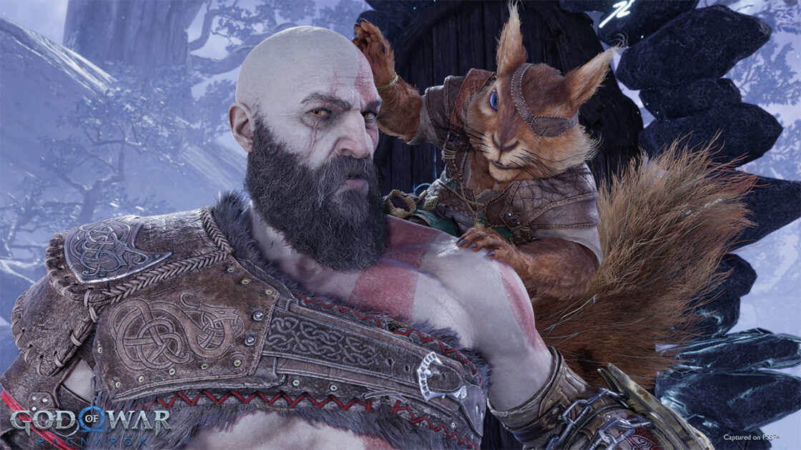

God of War Ragnarok - REVIEW
este dovada că jocurile video sunt adevărate opere de artă
Introducere
Când ne referim la jocurile video, de cele mai multe ori le privim ca pe niște produse; ori după cum le descrie Wikipedia: “jocuri electronice care interacționează cu o interfață grafică pentru a genera răspuns vizual pe un ecran.” – Sună foarte plictisitor și poate că acum câteva decenii descrierea asta ar fi avut sens. Dar clar nu în 2022-ul în care o lansare triple-A are în spate sute de oameni, care sub formă de colectiv au investit mii de ore în dezvoltarea unui astfel de proiect. Și doar pentru atâta lucru, cred că jocurile video ar trebui privite mai bine. Nu doar ca niște simple produse, ci ca rodul pasiunii unui colectiv de oameni care și-au unit abilitățile tehnice și talentul pentru a duce la bun sfârșit un proiect extrem de complicat.
Chiar și azi, la deja X ore Y minute Z secunde distanță de ziua lansării sale, consider că God of War 2018 este unul dintre cele mai bune jocuri create vreodată; așadar vă dați seama că pentru mine, lansarea lui God of War Ragnarok este ceva personal. Și tre’ să vă zic că îl joc deja de vreo două săptămâni și abia așteptam să vă povestesc și vouă despre ceea ce cred că este una dintre acele continuări care punctează mai bine decât originalul.
Povestea
Aventura din God of War Ragnarok începe la scurt timp după ce povestea primului joc s-a încheiat. Iar pentru cei care nu își mai amintesc mare lucru de-atunci, continuarea îți oferă opțiunea de a urmări o recapitulare a celor întâmplate direct în meniul principal. Îmi place la nebunie că cineva s-a gândit și la asta, iar în ultimii ani a fost așa, o chestie tipică pentru PlayStation care sper să-și păstreze obiceiurile bune în continuare. Și nici că se putea ca Ragnarok să înceapă mai bine de atât; faci ce faci, treci printr-o fază scurtă de tutorial și te trezești că-n prima oră de joc deja te bați cu niște personaje cunoscute.
Pe Freya poate că v-o amintiți din primul joc: știți voi, mama lui Baldur, zeul luminii pe care Kratos… l-a căsăpit… la finalul lui God of War. Uuuh, să zicem că nu e prea încântată că ucigașul plodului ei se plimbă liber prin pădure și încă de la începutul lui Ragnarok încearcă să îl scalpeze pe tăticul favorit al gamingului. Și dacă credeați că doar Freya are ceva de împărțit cu Kratos după finalul primului joc, nu uitați că fra-su mai mare al lui Baldur e un șmecheraș d-ăsta care se joacă cu un ciocan. E o șansă bună să-l recunoașteți sub numele de Thor.
De fapt asta este prima mare luptă din joc. După ce Odin și Thor îți fac o vizită de curtoazie în care te roagă respectuos să-ți vezi de treabă, Kratos face singurul lucru pe care l-ar putea face Kratos și reușește să îi enerveze pe amândoi. Înșiruirea asta de evenimente duce la una dintre cele mai tari lupte pe care le-am văzut în God of War Ragnarok, iar până în punctul ăsta nu ai mai mult de 90 de minute de gameplay. Adică de departe cel mai tare start de joc pe care l-am văzut în ultimii ani. Mai mult de-atât cred că așa trebuie să înceapă o continuare care se respectă, mai ales când trebuie să retrăiască gloria unui joc precum cel din 2018.
Ah, și țineți cont că ceea ce v-am povestit până acum se întâmplă în primele, să zic, două ore?! Două din vreo 40 câte însumează aventura din God of War Ragnarok. Restul poveștii se concentrează pe faptul că moartea lui Baldur a creat valuri în familia de zei și acum Kratos are beef cu Freya, Thor și Odin. Și ca să nu fie o simplă poveste de răzbunare, zeul războiului împreună cu fi-su Atreus încearcă să oprească Ragnarok-ul și să deblocheze adevăratul potențial al lui Loki… adică Atreus… da, știu, e complicat.
Vei călători prin diferite lumi care mai de care mai interesante, iar peisagistica din God of War Ragnarok este cu mult peste orice alt joc al seriei. Ajungi în zone nemaiîntâlnite până acum, locațiile sunt mult mai variate, dai nas în nas cu personaje noi, dar te reîntâlnești și cu unele din primul joc, iar pe durata întregii aventuri ești martor la modul în care evoluează relația dintre Kratos și Atreus care sunt tată și fiu, parteneri de luptă și prieteni. Și la fel ca și-n God of War 2018, componenta narativă a primit o atenție faorte mare din partea echipei de dezvoltare care a reușit să se ridice fără probleme la nivelul așteptărilor. Un lucru de aplaudat, mai ales că regizorul primului joc, Cory Barlog, a decis să lase soarta continuării în mâinile lui Eric Williams. Acesta din urmă este un veteran al seriei care a contibuit la sistemul de lupte din fiecare joc al francizei. În cazul lui Ragnarok a dat lovitura și ca regizor și dacă Barlog va decide să urmeze noi proiecte, soarta seriei God of War șade în mâinile potrivite.
Ragnarok ne prezintă și un Atreus schimbat. Aproape adolescent, fiul lui Kratos începe să-și descopere adevăratele puteri și pe masură ce crește își sfidează tatăl. Asta duce și la descoperirea unor părți ascunse din personalitatea lui Atreus care moștenește răbdarea și pasiunea pentru natură a mamei sale și creează un personaj-oglindă perfect pentru Kratos. Unde zeul războiului este o matahală musculoasă, dură și cu barba aia de lumberjack, fi-su e mai empatic, mai calm și pe parcursul poveștii îl învață pe bătrânul lui niște lecții importante.
Este plăcut să vezi cum un personaj evoluează sub ochii tăi și e și mai tare când această evoluție se întinde pe mai multe jocuri. Am văzut-o odată cu Ellie din The Last of Us 1 și 2, iar acum este rândul lui Atreus. S-au schimbat multe, de la vocea acestuia și până la modul în care interacționează cu jocul pe parcursul poveștii. Este mult mai util în lupte și devine din ce în ce mai puternic, începe să fie independent de taică-su și are aventuri pe cont propriu și este dornic să își afle scopul. De ce l-a numit lumea Loki și ce înseamnă acest nume în mitologia în jurul căreia gravitează lumea lui God of War Ragnarok? Iar toate astea primesc un răspuns mai mult sau mai puțin edificator. Este o poveste cu adevărat bună, care are substanță, mai multe fire narative, personaje memorabile și o mulțime de momente super tari care te vor face să te uiți la cinematice ca la un serial bun.
Gameplay
Printre puținele lucruri pe care i le-am putut reproșa lui God of War a fost sistemul de combat. Chiar dacă la început mi s-a părut super tare și mă bucuram de fiecare upgrade, odată ce am ajuns spre finalul jocului trebuie să recunosc că am cam început să mă plictisesc. Deși foarte bine făcut, sistem de luptă din primul joc suferea de o lipsă de varietate. Așa că God of War Ragnarok, ca o continuare bună ce este, îți dă încă de la început cele două arme emblematice: toporul Leviathan și faimoasele Blades of Chaos.
Fiecare armă în parte vine cu propriul arsenal de lovituri și poate fi îmbunătățită individual. Și ca să profite la maxim de prezența mai multor arme, dezvoltatorii au inclus mai multe manevre finisher astfel Kratos va executa un adversar cu arma pe care o are în mâna în momentul în care i-ai dat comanda. Deci când apeși R3 ca să omori un adversar cu un finisher, o să vezi decapitări cu toporul sau execuții sângeroase cu săbiile.
Luptele sunt mai fluide per total, iar ăsta este rezultatul unui cumul de mai mulți factori. Primul lucru care influențează pozitiv experiența de luptă este prezența varietății: ai două arme, fiecare vine cu un skill-tree separat, iar în completarea lor ai și mai multe scuturi. Fiecare dintre aceste scuturi are avantajele și dezavantajele sale, astfel va trebui să alegi ce se potrivește mai bine cu stilul tău de luptă. Și o să vezi pe parcursul jocului că aceste alegeri influențează și modul în care te vei lupta cu anumiți adversari. Și dacă tot am ajuns la discuția despre ce și cu ce omori, trebuie să vorbesc puțin și despre noii inamici. Pe lângă creaturile cu care te lupți încă din 2018, God of War Ragnarok introduce centauri vânători, crocodili gigantici și poate cei mai enervanți adversari din prima parte a jocului, Grims, un soi de broaște gigantice care țopăie de colo-colo, atacă în gașcă și au și-o variantă mutantă care scuipă acid.
Adversarii folosesc mai bine mediul înconjurător și de multe ori te vei găsi nevoit să te urci într-un punct mai înalt ca să analizezi mai bine opțiunile pe care le ai într-o luptă. Ba chiar ești împins de la spate să faci asta în noul God of War. Nivelurile au mai multă verticalitate și sunt presărate cu elemente care să te ajute să capeți un avantaj strategic în timpul bătăliilor. În combinație cu noile atacuri airborne, God of War Ragnarok mută luptele pe mai multe niveluri de înălțime și le face ceva mai alerte, un throwback la sistemul de luptă al jocurilor de pe vremea lui PlayStation 2.
Vorbeam mai devreme despre Atreus și cum a crescut fiul lui Kratos, iar în God of War Ragnarok avem ocazia să aruncăm o primă privire la puterile tânărului și magnitudinea acestora. Luptele au devenit mai solicitante, astfel ajutorul companionului tău este important, iar Atreus este foarte util în acest sequel. Pe lângă arcul cu săgeți și micile diversiuni pe care le crea în primul joc, acum este mai puternic și poate lovi adversarii cu atacuri melee puternice. În plus și-a descoperit și puterile magice și le va folosi împotriva adversarilor săi pe măsură ce deblochezi skill-urile necesare.
Progresia personajelor este și ea foarte interesantă și împrumută elemente din jocurile RPG. Ai câte un skill-tree pentru aproape orice: Kratos și Atreus au liniile lor de evoluție, ca în primul joc. Armele evoluează și ele și pot fi îmbunătățite prin deblocarea de abilități, iar o vizită la fierar îți deblochează și mai multe beneficii pentru arsenalul din dotare. Nu durează mult până când Kratos devine un luptător foarte periculos și versat, iar acest sistem de evoluție RPG-istica a picat la fix. Nu-i nici prea rudimentar, oferindu-ți ceva liberate de alegere, dar nici prea complicat încât și-un pasionat de jocuri Action-Adventure să-l poată înțelege fără dificultăți.
O altă îmbunătățire pe zona de combat o reprezintă atacurile din unghiuri moarte. În jocul precedent, orice matahală care te ataca pe la spate avea o șansă bună să îți ia capul. God of War Ragnarok repară această chestiune prin două adiții: ai odată săgețile care-ți indică poziția adversarului și pe lângă ele îi vei auzi pe Atreus și Mimir cum te avertizează când un adversar se apropie de tine pe neveu. Chestia asta este de mare ajutor mai ales atunci când crești dificultatea și fiecare lovitură încasată te poate lăsa cu un scuipat de viață. Și chestia asta cu viața a fost și ea îmbunătățită, astfel dacă ai ajuns la limită și ești la o lovitură distanță de moarte, jocul îți oferă un life-line. Adică reziști puțin mai mult, timp în care ai o șansă în plus să iei de pe jos un power-up de viață. Bine, nu vă gândiți că brusc, Kratos este invincibil. Tot dintr-o bucată cade, dar parcă adeversarii nu sunt atât de insistenți când rămâi cu puțin HP.
God of War Ragnarok primește o bilă albă pe partea de misiuni . Poți fie să te concentrezi pe sarcinile principale care avansează povestea jocului, fie să te afunzi în multitudinea de side quest-uri care au rolul de a-ți întări arsenalul și de a-ți prezenta mai multe zone din lumea absolut superbă a jocului. Și vă recomand să faceți și misiunile secundare pe măsură ce le deblocați mai ales dacă jucați pe dificultate mai mare, întrucât armele și armurile deblocate la finalul acestora sunt foarte utile. Iar dacă vreți un motiv în plus ca să explorați lumea și să completați sarcinile extra, călătoriile cu barca sunt acompaniate de povești din mitologia nordică spuse de Mimir, iar mecanica de control a saniei trasă de lupi este foarte bine implementată.
Ca întreg, gameplay-ul lui God of War Ragnarok este tot ce-aveam nevoie de la un joc. Are misiuni epice susținute de componenta narativă excelentă, lupte antrenante cu adversarii de nivel mai mic și niște boss fights cu adevărat memorabile, puzzle-uri și mai complicate decât în primul joc și desigur, o mulțime de cufere cu premii pentru exploratorii din voi. Pe mine m-a fascinat și o să încerc să îi completez toate trofeele. Și cine știe, poate până le dau gata iese jocul și pe PC ca să pot să-l iau de la zero pe cea mai mare dificultate.
Grafică
Mi-este ușor să vorbesc despre God of War Ragnarok și ce face bine, dar este extrem de dificil să îi găsesc un punct slab. Dacă povestea și gameplay-ul s-au dovedit a fi flawless, cel puțin din punctul meu de vedere, în sinea mea am sperat că grafica o să îmi dea motive de comentat. Na, să am și eu ceva măcar cât de cât negativ de zis acolo. Și să zicem că parcă-parcă aș avea două-trei chestii de comentat.
Adică pe partea de rezoluție și performanță aș putea chițăi vreo oră de-acum înainte cum că nu rulează la 4K cu 60FPS, dar aici nu este nicidecum vina jocului, ci a platformei limitate. Și tot ce am reușit să înțeleg este că God of War Ragnarok este prea mult pentru PlayStation 5. Deci nu jocul e buba, ci consola în sine. Și sunt de părere că experiența cu God of War pe PC mi-a influențat mult concluzia aici, după ce-am văzut cum arată și cum merge acest joc pe o platformă infinit mai puternică decât consolele actuale.
Ragnarok este un deliciu vizual și când am spus că este o operă de artă, am luat în considerare și grafica. Toată lumea a fost creată cu o atenție imensă la detalii, personajele sunt mai detaliate și mai expresive ca niciodată, iar efectele… mamă! Nu sunt cele mai bune pe care le-am văzut vreodată, dar cumva merg foarte bine aici.
Dar adevărata artă vizuală a lui God of War Ragnarok stă în modul în care este ilustrată povestea. De la unghiurile camerei din timpul cinematicelor până la personajele foarte arătoase, cei de la Sony Santa Monica au înțeles că trebuie să se concentreze foarte mult pe partea asta de storytelling și au livrat una dintre cele mai curate și fluide experiențe din industria de jocuri video. Plus că SSD-ul din PS5 a fost pus la treabă foarte bine, astfel nu întâmpini ecran de încărcare decât atunci când deschizi jocul, ori atunci când mori și trebuie să revii la un checkpoint mai îndepărtat. În rest totul este dintr-o bucată.
Asta a fost posibil datorită ingeniozității dezvoltatorilor. Aceștia au folosit un truc deja vechi în industrie și-n loc de ecrane de încărcare care să te distragă de la acțiune, nivelurile se încarcă în timpul în care traversezi pe crouch un tunel sau vreo zonă interioară care servește ca zonă tampon dintre nivelurile mai mari pe care trebuie să le încarce jocul înainte de a te lăsa liber să omori tot ce mișcă prin ele. Și chiar dacă din auzite pare așa, o chichiță din asta fără de care poți trăi bine mersi, odată ce o vezi în acțiune vei înțelege cât de importantă este această adiție… ori mai de grabă, improvizație. O improvizație fericită care face jocul să se simtă mai autentic.
God of War Ragnarok vine și cu mai multe setări grafice, așadar ai modurile clasice: Quality și Performance, iar pe lângă acestea, mai există și un mod High-Framerate. Teoretic, jocul suportă rate de refresh de până la 120Hz și chiar dacă nu livrează constant 120FPS, reușește să urce peste 60 de cadre pe secundă. Asta vine însă cu un impact vizual destul de mare, astfel nu știu cât de mulți vor sacrifica frumusețea acestui joc doar pentru ceva FPS în plus.
Sunet
Partea auditivă este și ea un deliciu și creează o armonie perfectă cu grafica și povestea. Vocile personajelor sunt alese perfect și de multe ori te vei opri cu barca în mijlocul bălții ca să îl asculți pe Mimir cum îi povestește lui Atreus câte o legendă nordică. Și mai sunt momente d-astea, precum apariția lui World Serpent care comunică printr-un soi de grohăieli și atinge niște frecvențe joase care mai-mai că îmi făceau boxele din televizor să gâjâie. Deci cu un sistem audio bun te vei bucura și mai mult de jocul ăsta. Sunetul te ajută și în luptă, mai ales când înveți cum grohăie fiecare arătare în funcție de atacul pe care urmează să-l inițieze asupra ta, așa că îl consider o parte vitală a experienței de joc din God of War Ragnarok.
Concluzii
Ce iese când pui laolaltă o componentă narativă foarte bine dezvoltată, gameplay-ul antrenant și grafica extrem de atent lucrată? Iese un întreg extrem de echilibrat, un joc care se poate lăuda că punctează bine la toate categoriile și care se prezintă ca un adevărat pretendent pentru o mulțime de titluri la final de an. Și pentru asta cred că God of War Ragnarok este cu adevărat o operă de artă, așa că nu cred că mai are rost să-l notez individual, pe categorie și o să las de la mine micile neajunsuri care ar fi dus totalul la un nouă-șaptezeci. Inițial am vrut să îl punctez perfect pe partea de poveste și gameplay, oferindu-i un nouă pe grafică, doar că nu m-a lăsat inima să privez un joc atât de bun de nota perfectă. Deci fără să am nici un fel de remușcări, Ragnarok ia de la mine un zece curat!
Mă înclin în fața celor de la Sony Santa Monica și nu pot să le aplaud destul munca depusă în dezvoltarea acestui joc. Dezvoltatorii și-au luat libertatea de a scoate jocul când au considerat că este gata, iar mișcarea asta a cântărit foarte mult. De ce? Pentru că în final am primit un joc cu adevărat bun care se simte gata încă dinainte de lansare și care nu prezintă urme de lene, de grabă ca să fie lansat, ori de tipicele tactici de monetizare nesimțite pe care le întâlnim tot mai des și-n jocuri single-player.
10
GOTY
Ce părere ai?
Nota Poveste
Nota Gameplay
Nota Grafică
Nota Sunet